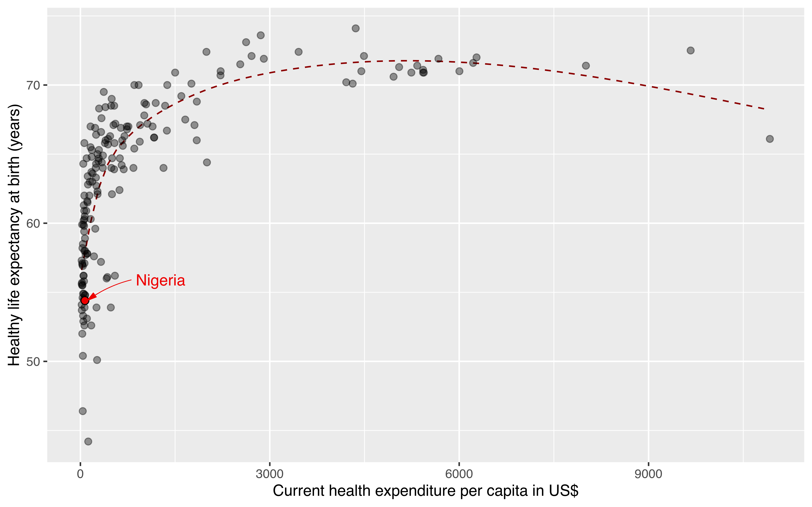

Dr Adamu Onu
Home
Projects
Courses
Publications
About Me
Categories
All
(3)
data visualization
(2)
health expenditure
(1)
news
(1)
Blog
Order By
Default
Title
Date - Oldest
Date - Newest
Author

Nigeria’s health system: A story in five charts
Nigeria is Africa’s most populous country and the continent’s largest economy. However, it lags on several critical measures of health. The country ranks near the bottom of the league for the population’s health. There is a gap between the current realities of the Nigerian health system and the expectations regarding the system. Within that gap lies opportunities to increase investment in health and improve Nigerians’ health outcomes.
Aug 12, 2022
Adamu Onu
3 min
The importance of visualizing your data
The visualization of your data is very important especially during the exploratory stages of data analysis. Data visualization may reveal relationships that may not otherwise be apparent. Also, important results can be communicated lucidly to your audience through graphs and charts.
Jul 25, 2022
Adamu Onu
11 min
Welcome To My Blog
Personal webpage of Dr. Adamu Onu
Jul 24, 2022
Adamu Onu
0 min
No matching items